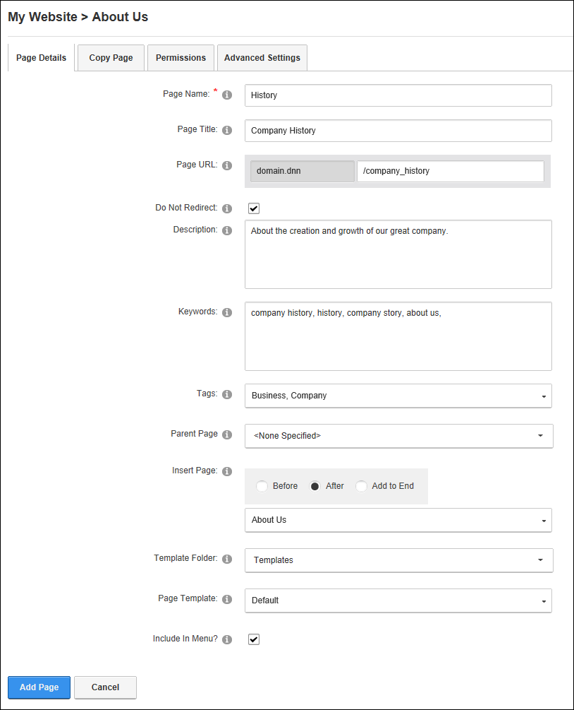

Page Details Settings for New Pages
How to set page details settings for new pages using the Page Settings page. Note: The Page Name field is the only mandatory field. This topic assumes you have already begun the process of adding a new page. See "Adding a New Page"
The Url will be checked for validity and any illegal characters will be removed.
- Select the Page Details tab.
- In the Page Name text box, enter a name for the page. If this page is displayed in the menu, this will be the name in the menu. E.g. About Us
- In the Page Title text box, enter a short, descriptive sentence summarizing the page content. The title is used by search engines to identify the information contained on the page. It is recommended that the title contains at least 5 highly descriptive words and does not exceed 200 characters.
- In the Page URL text box, enter a custom URL for this page (e.g. About Our Company). The URL will be checked for validity and any illegal characters will be removed - OR - Leave this field blank to use the Page Name as the URL (e.g. About Us).
- At Do Not Redirect, to exclude this page from any rules that may include it in a redirection - OR - to include this page in redirection rules.
- In the Description text box, enter a description of the page content. The description is used by search engines to identify the information contained on the page. It is recommended that the description contains at least 5 words and does not exceed 1000 characters.
- In the Keywords text box, enter key words for this page separated by comma.
- At Tags, click on the drop down list and beside each tag to be associated with the content of this page. Page tagging is a way of categorizing content for more meaningful search results. Tags can be created by users (See "Tagging Page Content") or editors (See "Creating a Vocabulary").
- At Parent Page, select from these options:
- Select None Specified to set this page as a parent page which, if visible in the menu, will be displayed in the top level of the menu.
- Select the parent page from the drop down list. Pages are listed in the order they appear in the menu by default, however you can choose to order them in A-Z or Z-A order, or perform a search for all or part of a page name. Users can only choose from select parent pages. In DNN Platform, users must be granted Edit permissions and in Evoq Content and Evoq Content Enterprise, users must be granted either Add or Full Control.
- At Insert Page, select from these options to choose the location of the new page in the menu:
- Select a page from the drop down list and then select to add the new page either Before or After that page in the menu on the current level.
- Select Add to End to add the new page to the end of the menu on the current level.
- Optional. Set a page template which allows you to add modules with optional content to a new page. Note: This option is not available when copying a page. Complete the following to set the template for this page:
- At Template Folder, select the folder where the required template is located.
- At Page Template, select the required template.
- At Include In Menu?, to include this page in the menu- OR - to hide the page.
- Click the Add Page button.

-
See "About the Taxonomy Manager Module"